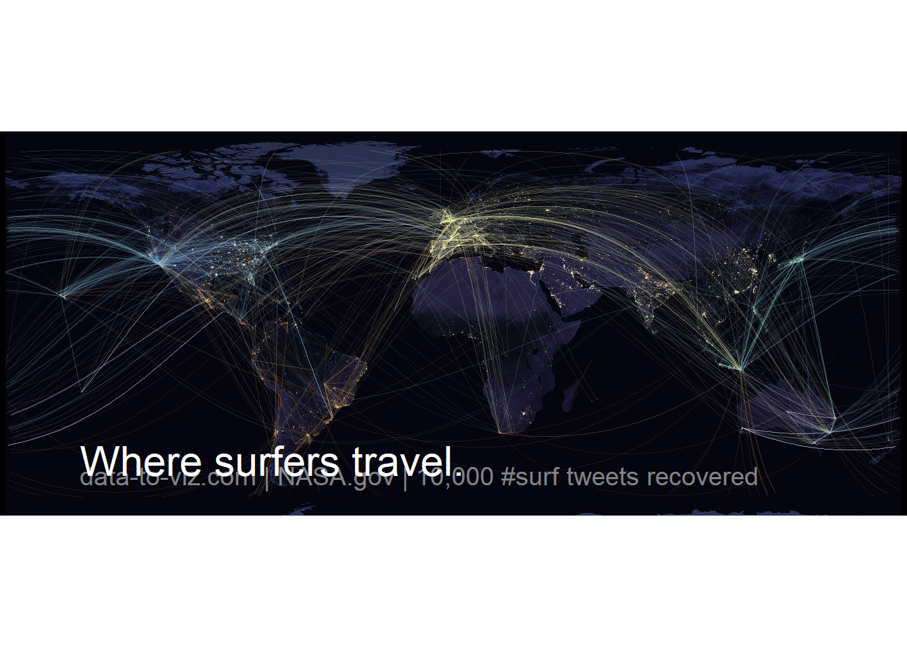
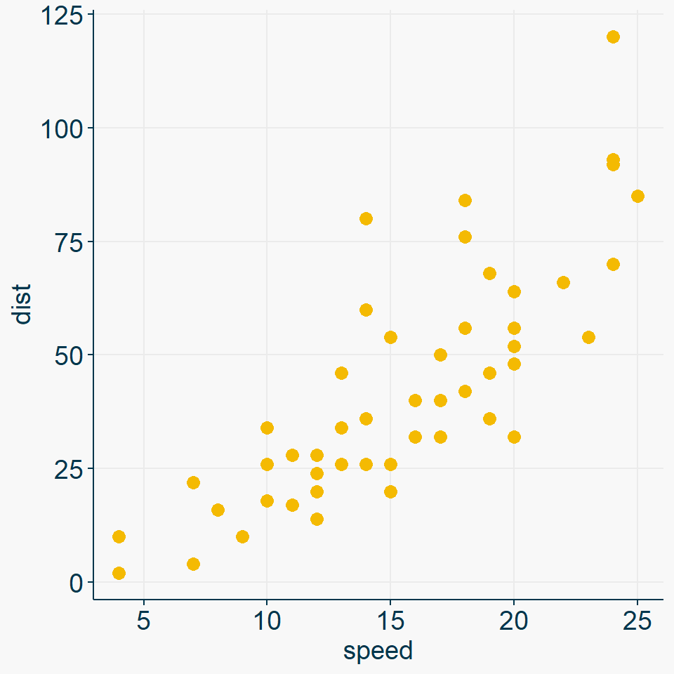
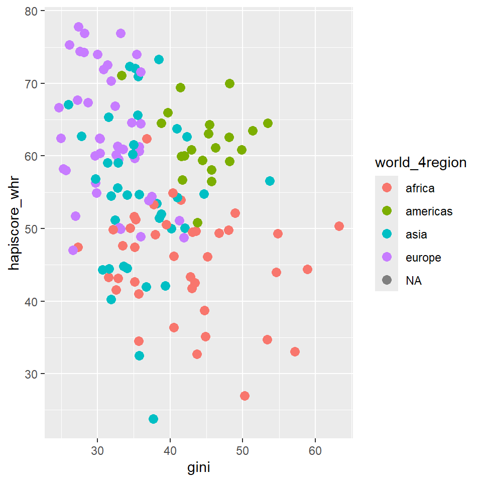

── Attaching core tidyverse packages ──────────────────────── tidyverse 2.0.0 ──
✔ dplyr 1.1.4 ✔ readr 2.1.5
✔ forcats 1.0.0 ✔ stringr 1.5.1
✔ ggplot2 3.5.2 ✔ tibble 3.2.1
✔ lubridate 1.9.4 ✔ tidyr 1.3.1
✔ purrr 1.0.4
── Conflicts ────────────────────────────────────────── tidyverse_conflicts() ──
✖ dplyr::filter() masks stats::filter()
✖ dplyr::lag() masks stats::lag()
ℹ Use the conflicted package (<http://conflicted.r-lib.org/>) to force all conflicts to become errorsEinführung
Plotting
Motivation
Datasaurus Dozen (quartets-Paket)
| dataset | mean_x | var_x | mean_y | var_y | cor |
|---|---|---|---|---|---|
| away | 54.27 | 281.23 | 47.83 | 725.75 | -0.06 |
| bullseye | 54.27 | 281.21 | 47.83 | 725.53 | -0.07 |
| circle | 54.27 | 280.90 | 47.84 | 725.23 | -0.07 |
| dino | 54.26 | 281.07 | 47.83 | 725.52 | -0.06 |
| dots | 54.26 | 281.16 | 47.84 | 725.24 | -0.06 |
| h_lines | 54.26 | 281.10 | 47.83 | 725.76 | -0.06 |
| high_lines | 54.27 | 281.12 | 47.84 | 725.76 | -0.07 |
| slant_down | 54.27 | 281.12 | 47.84 | 725.55 | -0.07 |
| slant_up | 54.27 | 281.19 | 47.83 | 725.69 | -0.07 |
| star | 54.27 | 281.20 | 47.84 | 725.24 | -0.06 |
| v_lines | 54.27 | 281.23 | 47.84 | 725.64 | -0.07 |
| wide_lines | 54.27 | 281.23 | 47.83 | 725.65 | -0.07 |
| x_shape | 54.26 | 281.23 | 47.84 | 725.22 | -0.07 |
Warning: The `size` argument of `element_line()` is deprecated as of ggplot2 3.4.0.
ℹ Please use the `linewidth` argument instead.
Warum ggplot2?
Einfach!
- Simple, schnelle Beispiele
Beautiful
- Beispiele verschönert
The R Graph Gallery
Lade nötiges Paket: sysfontsLade nötiges Paket: showtextdbRows: 507 Columns: 9
── Column specification ────────────────────────────────────────────────────────
Delimiter: ","
chr (3): password, category, time_unit
dbl (6): rank, value, offline_crack_sec, rank_alt, strength, font_size
ℹ Use `spec()` to retrieve the full column specification for this data.
ℹ Specify the column types or set `show_col_types = FALSE` to quiet this message.Warning: Using `size` aesthetic for lines was deprecated in ggplot2 3.4.0.
ℹ Please use `linewidth` instead.Warning in scale_y_log10(expand = c(0, 0)): log-10 transformation introduced infinite values.
log-10 transformation introduced infinite values.Warning: Removed 1 row containing missing values or values outside the scale range
(`geom_point()`).Warning in scale_y_log10(expand = c(0, 0)): log-10 transformation introduced infinite values.
log-10 transformation introduced infinite values.Warning: Removed 10 rows containing missing values or values outside the scale range
(`geom_point()`).
Example from The R Graph Gallery.

Image from Wikipedia.
{kind=link}
Scale for x is already present.
Adding another scale for x, which will replace the existing scale.Warning: Removed 310 rows containing missing values or values outside the scale range
(`geom_line()`).
https://r-graph-gallery.com/best-r-chart-examples https://allisonhorst.com/r-packages-functions
Example plot
